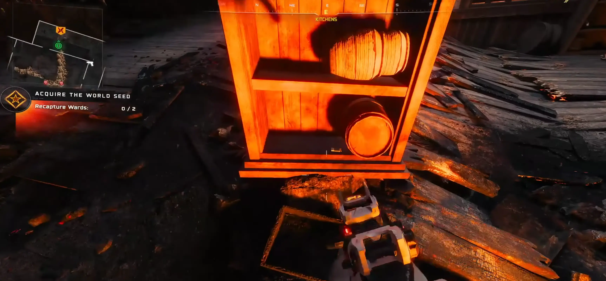
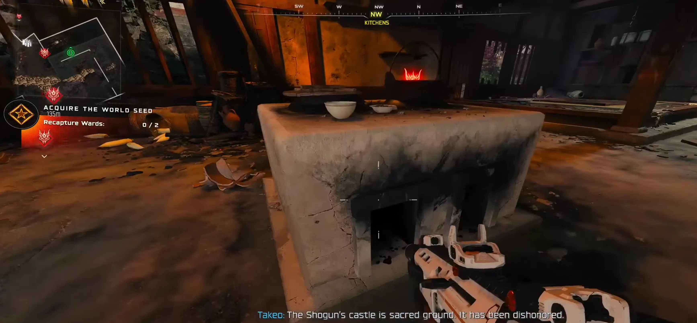
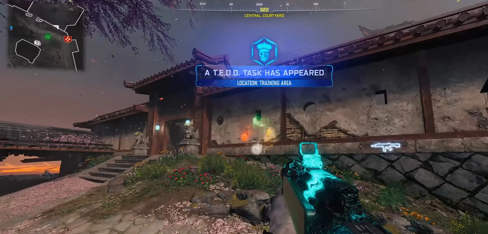

← Powrót do poprzedniej strony
KROK 1: Zbuduj podstawowe Maneki-Neko
Pełny poradnik znajdziesz tutaj Musisz zebrać trzy części (każda ma 3 losowe miejsca):- Figurka kota:Kuchnie (na beczce przy Double Tap lub wewnątrz budynku) lub Stróżówka.
- Dzwonek (Furine):Stajnie (przy zniszczonym domu), Obszar treningowy (krawędź przy drzewie wiśni) lub Strefa przygotowań (wisi wysoko).
- Mechanizm (Karakuri):Magazyny (góra lub dół) lub Warsztat (przy beczce na dole).
- Złożenie:. Stół rzemieślniczy w Workshop (Warsztat). Jeśli go stracisz, dokupisz go za 500 złomu.
KROK 2: Znajdź Zapałki i Węgiel
Udaj się do sekcji Kitchens (Kuchnie), aby zebrać paliwo do ulepszenia:- Zapałki: Znajdziesz je na samym dole regału w kuchni.
- Węgiel: Leży w tylnej części kuchni, blisko miejsca z zapałkami..


KROK 3: Ulepsz pułapkę Upiornego Strzelca
To najtrudniejszy krok tego pobocznego easter egga.- Musisz zdobyć Combat Bow (Łuk bojowy) – kup go za złom lub znajdź w skrzyni.
- Idź do posągów lwów i aktywuj pułapkę Rifleman Trap.
- Stań za pułapką i strzel z łuku przez mały otwór w oknie w tarczę. Będziesz otrzymywać obrażenia, więc rób to szybko!
- Zostaniesz przeniesiony w tryb Zasłony Energetycznej. Musisz zestrzelić serię tarcz, które pojawią się na pniu Blossom Tree (Kwitnące drzewo wiśni Takeo) na głównym dziedzińcu.
- Wróć do pułapki i wejdź w interakcję z czterema maskami lewitującymi obok. Ich oczy zmienią kolor na żółty.
- Poczekaj, aż pułapka się odnowi (oczy zaświecą się na zielono). Teraz strzela ona laserami z efektami Modyfikacji amunicji.

KROK 4: Zbierz Biały Proszek
Gdy pułapka zostanie w pełni ulepszona, za nią (w sekcji Tenshu Entrance) pojawi się White Powder (Biały Proszek). Podnieś go.
KROK 5: Finałowy Crafting
Mając Zapałki, Węgiel i Biały Proszek, wróć do stołu rzemieślniczego w Workshop (Warsztat). Ulepsz swoje Maneki Neko!

NAGRODA
Kiedy rzucisz ulepszonego kotka, wokół niego pojawi się specjalna tarcza. Jeśli w niej staniesz, będziesz praktycznie nieśmiertelny, dopóki granat działa! Na koniec figurka wybucha, czyszcząc okolicę. Możesz go odnawiać za pomocą Max Ammo lub kupić ponownie za złom.